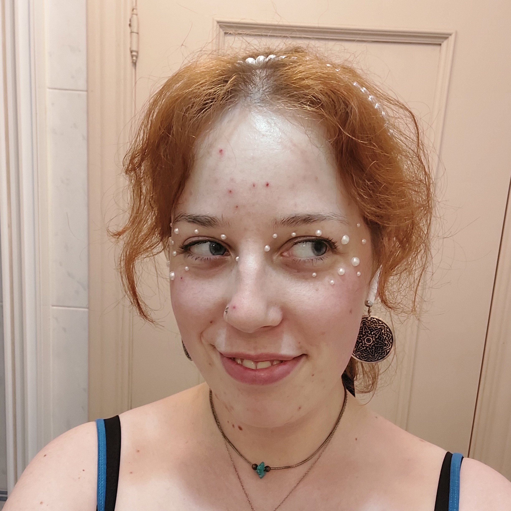

Hvem er jeg?
Jeg er en 25-årig bornholmsk multimediedesignstuderende med en passion for kreativ udfoldelse af næsten enhver slags - om det er så kodning, håndarbejde, design, musik eller litteratur.
Som designer beskæftiger jeg mig med udvikling af tekniske såvel som visuelle digitale produkter, hvor jeg især specialiserer mig inden for webudvikling og frontend development. Noget af det, jeg elsker allermest, er at omsætte koncepter og visuelle designs til kode og se det fungere.
Jeg er meget system- og mønsterorienteret, og nyder at analysere kodesammenhænge og eksperimentere med de forskellige dele.
